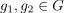
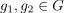
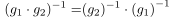
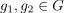

Inversion einer Klamme (Gruppe)
1. Satz
Sei  eine Gruppe und .
Dann folgt:
eine Gruppe und .
Dann folgt:

1
2. Beweis
 2
2
Aufgrund der Eindeutigkeit des inversen Elements einer Gruppe folgt
Sei eine Gruppe und .
Dann folgt:
2
Aufgrund der Eindeutigkeit des inversen Elements einer Gruppe folgt